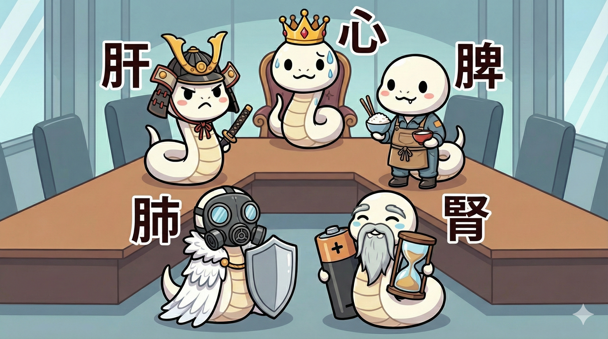

「五臓六腑に染み渡る〜！」
ビールを飲んだ時に言うアレです。でも、具体的に体のどこに染み渡っているか知っていますか？
半分正解ですが、漢方の「臓器」は西洋医学の臓器とは少し違います。
それは、ただの肉の塊ではなく、「役割分担されたチーム（機能）」のことなんです。
情報量が多いので、今回はまずリーダー格である「五臓（ごぞう）」についてお話しします。
1. 「臓（ぞう）」と「腑（ふ）」の違い
そもそも、なぜ2種類あるのでしょう？
博士いわく、役割が真逆なんだそうです。
五臓
肝・心・脾・肺・腎
今回の主役大切なエネルギー(気血)を
しまっておく金庫。
六腑
胃・腸・膀胱など
次回解説食べ物を消化して
通していくパイプライン。
五臓は「王様や大臣（中身が詰まっている）」、六腑は「役人や現場（中空で動かす）」というイメージです。
今日はまず、この国のリーダーである「五臓」について詳しく見ていきましょう。
2. 五臓は「会社組織」だと思え
特に重要な「五臓」の働きは、会社に例えると一発でわかります。
誰か一人でもサボると、会社（体）は倒産（病気）します。

🌲 肝（かん）
将軍・司令塔
血を貯蔵し、気や血の巡りをコントロールする。
ストレスに弱く、ここが乱れるとイライラしたり情緒不安定になる。
🔥 心（しん）
社長・君主
血液をポンプのように送り出し、精神（こころ）を宿す場所。
ここが弱ると、不眠や不安感、動悸が出る。
⛰️ 脾（ひ）
工場長・消化担当
食べ物をエネルギー（気血）に変える製造工場。
思い悩みすぎると胃が痛くなるのは、脾がダメージを受けるから。
⚔️ 肺（はい）
防衛大臣・空調管理
呼吸を行い、気を全身に巡らせる。皮膚バリア機能も担当。
ここが弱ると風邪を引きやすくなったり、肌が乾燥する。
🌊 腎（じん）
生命力の貯蔵庫
生まれ持ったエネルギーを蓄え、老化や発育を司る。
「腎虚（じんきょ）」＝老化。白髪や足腰の弱りはここの衰え。
3. まとまりのないチームは弱い
どうじゃ？
お主の体の中では、この5人の部長たちが毎日24時間、文句も言わずに働いてくれておるんじゃ。
「心（社長）」ばかり酷使して、「脾（工場長）」に飯も食わせずに働かせたら、そりゃストライキ（病気）も起きるじゃろう？
体をいたわることは、
ブラック企業の経営を
見直すことと同じ。
さて、ここで疑問が湧きませんか？
「じゃあ、食べたものはどこを通っていくの？」と。
次回、後編は「六腑（ろっぷ）」について。
あなたの体の中を通る「パイプライン」の秘密に迫ります。お楽しみに！